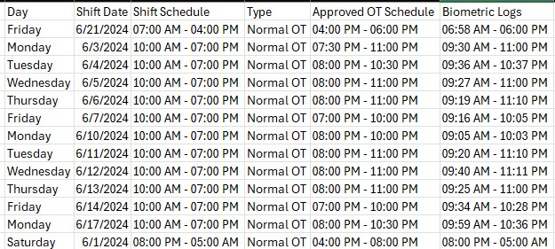
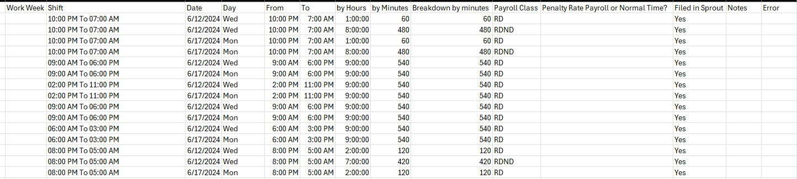
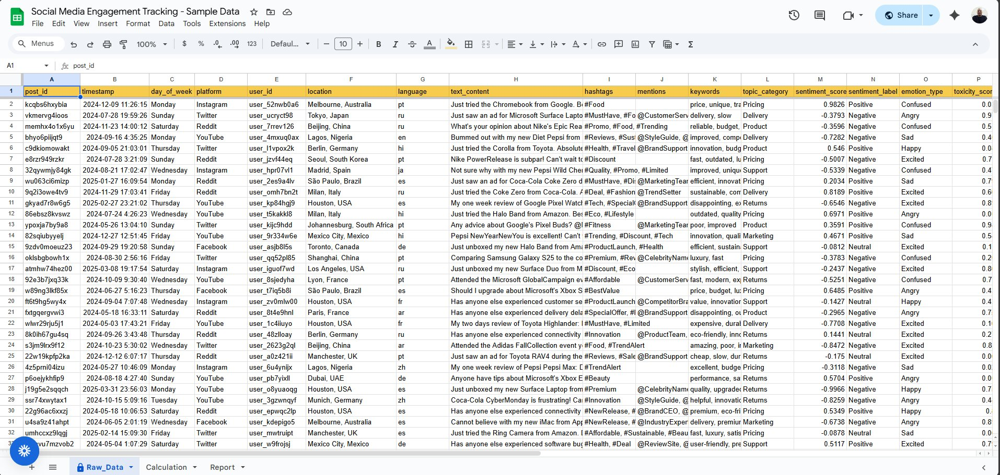

← Back
Automation


BeforeTimesheet Automation
Built an automated timesheet workflow using anonymized attendance data exported from Sprout, transforming raw biometric logs into a structured, payroll-ready format while maintaining data confidentiality.
- CSV file generated from Sprout containing anonymized shift schedules and biometric logs (Raw Data)
- Automated processing converts raw data into a clean, structured timesheet output for payroll review (Output)
- All employee-identifiable information removed to comply with data privacy requirements
- Reduced manual processing time and minimized payroll-related errors
Tools Used
Python
Pandas
CSV Processing
Git Bash
Bash
Automation Scripts

BeforeAutomated Social Media Reporting using Spreadsheet Queries (Sample Data)
Developed a structured reporting using sample social media data to demonstrate query-driven automation within a spreadsheet environment.
- Designed a multi-sheet structure separating raw data and reporting outputs
- Used spreadsheet queries to extract, aggregate, and summarize sample raw data
- Automated calculation of engagement metrics and platform performance
- Implemented auto-updating summaries that refresh as new rows are added
- Demonstrated lightweight reporting automation using native spreadsheet tools
Link to the spreadsheet:
Tools Used
Google Sheet
Queries